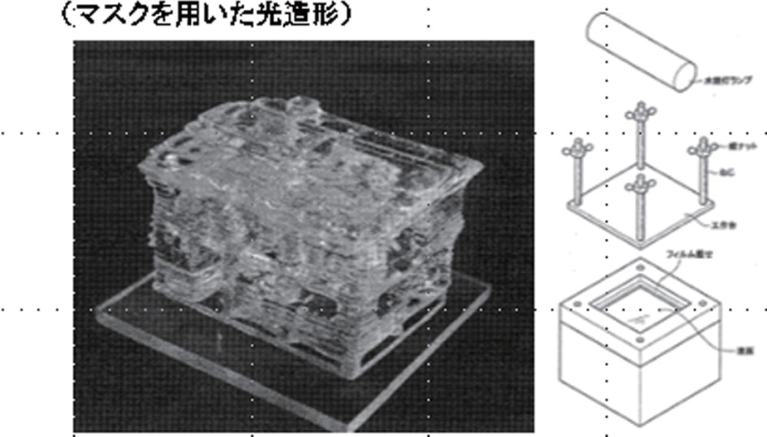
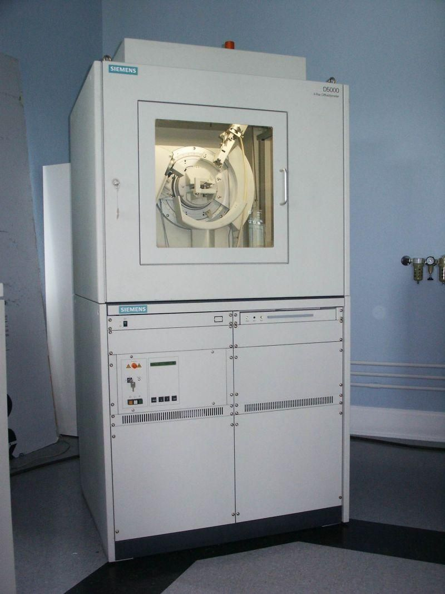
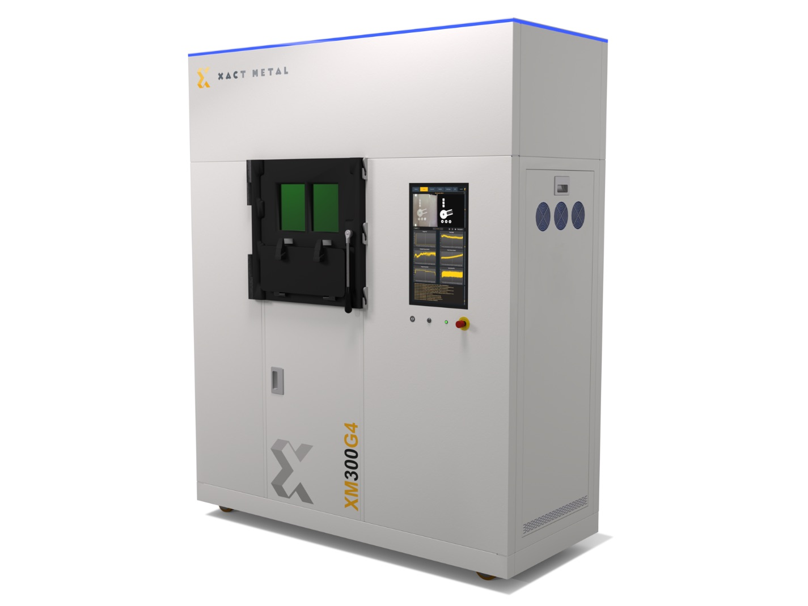
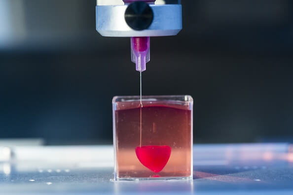
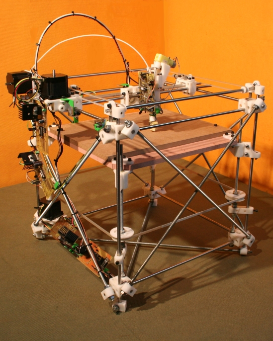
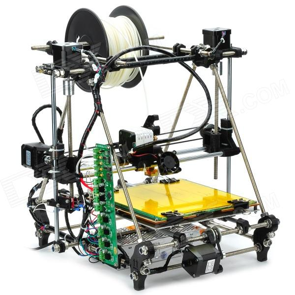
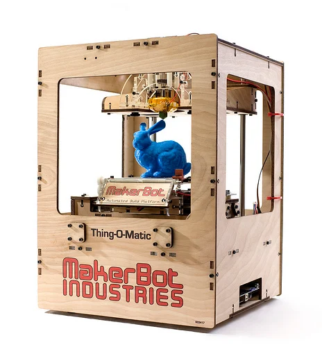
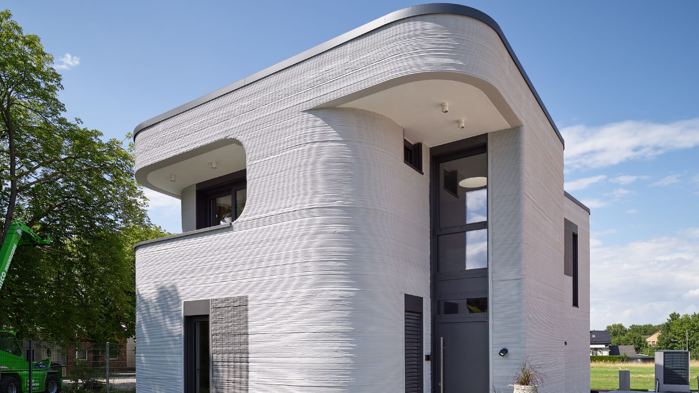

1981
eerste concept

Hideo Kodama beschrijft het eerste concept voor een systeem om objecten laag per laag te produceren.
1984
Stereolithografie (SLA)

Chuck Hull ontwikkelt stereolithografie, de eerste echte 3D-printtechniek met vloeibare hars en UV-licht.
1986-1988
Eerste commerciële 3D-printer

3D Systems wordt opgericht en brengt de eerste commerciële 3D-printer op de markt: de SLA-1.
1990
Nieuwe technieken

Nieuwe technieken zoals SLS (poeder) en FDM (gesmolten plastic) worden ontwikkeld en verbeterd.
1999
Medische doorbraak

Wetenschappers printen voor het eerst een menselijk orgaan (een blaasstructuur) voor onderzoek.
2005
Open-source revolutie

Het RepRap Project start: een open-source initiatief om goedkope 3D-printers te maken die zichzelf deels kunnen printen.
2008
Zelfreplicerende printer

RepRap Darwin kan een groot deel van zijn eigen onderdelen produceren.
2009-2012
Consumentenmarkt groeit

Bedrijven zoals MakerBot maken 3D-printers betaalbaar en toegankelijk voor thuisgebruik en onderwijs.
2015
Industriële doorbraak

Doorbraken in metaalprinten en bioprinting maken complexe industriële en medische toepassingen mogelijk.
2020-Nu
Massale toepassingen

3D-printing wordt ingezet in diverse sectoren: huizenbouw, luchtvaart, voeding, geneeskunde (protheses, implantaten) en nog veel meer.